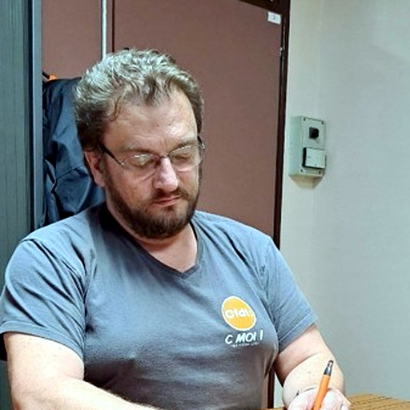
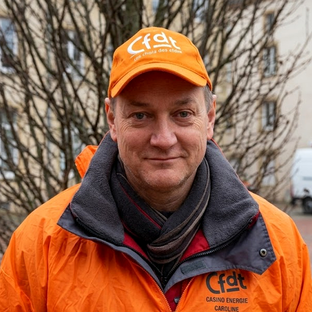
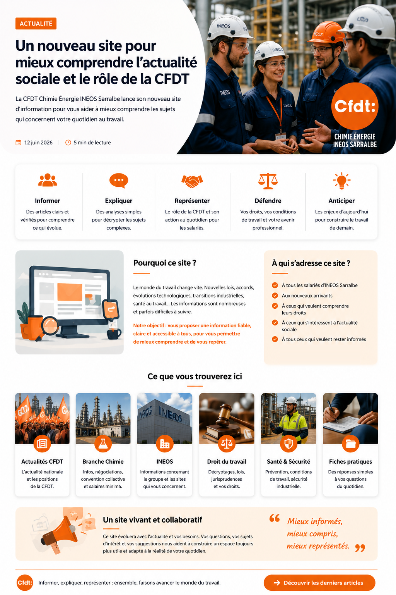
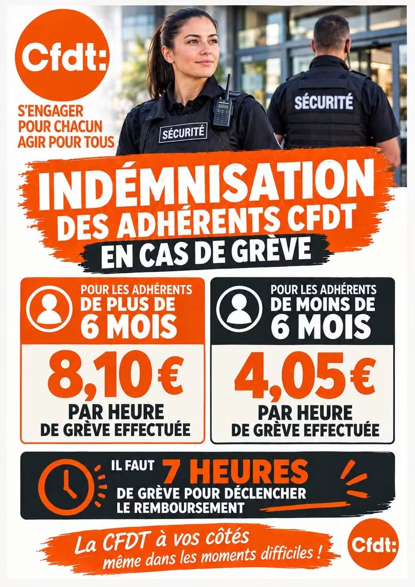
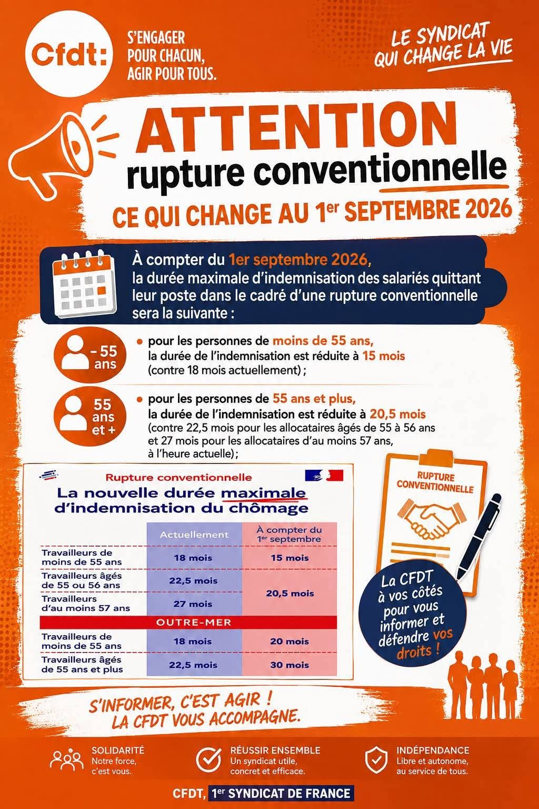

Vous défendre
La CFDT agit chaque jour pour faire respecter vos droits et vous accompagner dans vos démarches.
En savoir plusS’engager pour chacun, agir pour tous
La CFDT Chimie Énergie INEOS Sarralbe agit chaque jour à vos côtés pour défendre vos droits, améliorer vos conditions de travail et pérenniser ensemble l’activité du site.
La CFDT agit chaque jour pour faire respecter vos droits et vous accompagner dans vos démarches.
En savoir plusNous œuvrons pour votre santé, votre sécurité et de meilleures conditions de travail.
En savoir plusParce que le collectif est notre force, nous construisons ensemble les avancées de demain.
En savoir plusQui sommes-nous ?
Un syndicalisme structuré, transparent et proche de votre quotidien à l'usine.
Votre section locale s'appuie sur des structures régionales et nationales fortes pour défendre vos droits.
Le Bureau Lorrain assure la formation juridique de vos représentants au CSE.
Les orientations fédérales guident nos négociations locales, des NAO aux conditions de travail.
Échelon Confédéral
Secrétaire Générale de la CFDT
Elle assure la direction nationale et la représentation politique de la Confédération. Elle porte la voix de l'ensemble des travailleuses et des travailleurs auprès des instances gouvernementales et patronales nationales.
Photo : Anne Bruel, CC BY-SA 4.0
Échelon Fédéral · FCE-CFDT
Secrétaire Générale de la Fédération Chimie Énergie
Elle anime et coordonne l'action syndicale pour les branches de la chimie, de l'énergie, du plastique et du verre, avec un appui solide aux sections de France.
Élue au 8e Congrès de la FCE-CFDT à Lille.
Échelon Régional
Le Bureau Lorrain
Notre structure régionale de proximité, basée à Pont-à-Mousson. Elle gère les formations de vos élus locaux et apporte une expertise juridique indispensable pour négocier au mieux vos accords.


Échelon Local
Vos représentants de terrain
Au plus près de votre quotidien à l'usine. Notre équipe locale négocie vos accords d'entreprise, vous défend et siège au CSE. Nous privilégions un syndicalisme d'écoute, factuel et orienté solutions.
Nos élusÉlections CSE 2026 · résultats du 6 novembre
Merci de votre confiance. Voici les élus CFDT pour les quatre années à venir : une équipe issue du terrain, qui rend compte après chaque réunion.
5 élus CFDT sur 11 sièges de titulaires
Délégué Syndical & Élu CSE
Thierry porte vos revendications au quotidien auprès de la direction et veille au respect de vos droits.
Chef de Poste au Laboratoire
Linda assure votre représentation tout en prenant en charge des dossiers sociétaux et pratiques essentiels à votre quotidien.
GN (Générateurs / Utilités)
Sébastien est notre interlocuteur au service Générateurs et le garant d’une transition juste lors de l’arrêt des chaudières charbon.
Cabinier Finishing
Fort d’une solide expérience du secteur Finishing, David porte la voix de ses collègues sur les conditions de travail et les problématiques du service.
Chef de poste Fabrication
Marc allie une solide expérience du terrain à une analyse concrète des difficultés du service Fabrication.
4 élus CFDT sur 11 sièges de suppléants
Conducteur Finishing
Sébastien connaît le Finishing de l’intérieur. Son expérience du terrain lui permet de comprendre les difficultés du quotidien et de les faire remonter.
Secteur A · Catalyseurs
Représentant du secteur Catalyseurs, Matteo fait entendre la voix des équipes du Secteur A.
SPP
Pierre apporte ses compétences techniques et sa vigilance sur le terrain pour garantir un environnement de travail sûr à chacun.
Chef d’équipe au Secteur A
En tant que chef d’équipe, Jérôme a une vision claire du Secteur A.
Ce qui guide notre action au quotidien pour les travailleurs
Permettre à chaque travailleur de prendre sa vie en main et de développer son potentiel. Cela passe par le droit à la formation, à l'évolution et au respect de la dignité de chacun.
La démocratie ne s'arrête pas aux portes de l'entreprise. Nous militons pour que chaque salarié puisse s'exprimer, participer aux décisions et être acteur de ses conditions de travail.
Refuser le repli sur soi. Nous défendons les droits de tous, en créant des ponts entre salariés, demandeurs d'emploi et retraités pour lutter activement contre la précarité.
Garantir les mêmes droits pour tous. La CFDT combat au quotidien les discriminations et s'engage fermement pour l'égalité professionnelle entre les femmes et les hommes.
Une totale autonomie vis-à-vis des partis politiques, de l'État et des religions. Notre liberté de parole et d'action est garantie par les cotisations de nos adhérents.
Infos et actualités
Chaque sujet dispose de son espace pour publier les points utiles, les alertes et les actualités de la section.

Nouveau site
Retrouvez les dernières informations CFDT, les sujets de branche, les repères juridiques et les informations utiles au quotidien des salariés.
Movember, né en 2003, invite les hommes à se laisser pousser la moustache en novembre pour sensibiliser à la santé masculine : prévention des cancers de la prostate et des testicules, santé mentale, prévention du suicide. L'objectif : lever les tabous et rappeler l'importance du dépistage précoce et du suivi médical.
Les hommes consultent souvent plus tard et parlent peu de leur santé. L'entreprise a un rôle à jouer : sensibiliser, informer, encourager la prévention. Pour la FCE-CFDT, la santé ne doit jamais être un sujet tabou.
Lire l'article completSource : FCE-CFDT, édito de la semaine du 28 octobre 2026

La CFDT indemnise ses adhérents lorsqu'ils font grève, selon leur ancienneté d'adhésion.
Source : CFDT
Chères collègues, chers collègues,
Du 4 au 6 novembre, vous avez voté. Merci ! C'est grâce à vous que nous avons obtenu ce bon résultat : la CFDT compte 5 élus titulaires sur 11 au CSE, ce qui en fait la première organisation en nombre de titulaires, et 4 élus suppléants.
Cette confiance, nous la prenons comme un engagement. Le travail ne fait que commencer : nous avons quatre années devant nous pour avancer avec vous, pour améliorer vos conditions de travail, défendre vos droits et vos acquis, et tenir les engagements pris dans notre profession de foi.
Surlignés en jaune : les élus CFDT.
| Membres titulaires | Membres suppléants | ||
|---|---|---|---|
| Thierry KREMPFF | CFDT | Sébastien HENNICK | CFDT |
| Linda NOEL | CFDT | Matteo MALTANA | CFDT |
| Sébastien RUDEN | CFDT | Pierre OTTINGER | CFDT |
| David STAUB | CFDT | Sophian MONTANT | CGT |
| Audrey REICH | CGT | Kentin PHILIPPI | CGT |
| David PEIL | CGT | Stéphane JEANNOT | CGT |
| Membres titulaires | Membres suppléants | ||
|---|---|---|---|
| Mickael KEFF | CFE-CGC | Michel FISCH | CFE-CGC |
| Grégory MICHEL | CFE-CGC | Corinne KUFFLER | CFE-CGC |
| Sarah GIBRAT | CFE-CGC | Laurent BARTHELEMY | CFE-CGC |
| Marc MOECKES | CFDT | Jérôme HOFFMANN | CFDT |
| Membres titulaires | Membres suppléants | ||
|---|---|---|---|
| Julian SPOHR | CFE-CGC | Johan SOLER ALARÇON | CFE-CGC |
Source : publication des résultats des élections du CSE 2026 par l'entreprise, le 6 novembre 2026.
Une idée, une question, un problème dans votre service ? Arrêtez-nous à l'atelier, au bureau, ou passez sur ce site. Vos élus sont vos collègues, et ils sont là pour vous.
L'équipe CFDT INEOS Sarralbe
« Sans les salariés et sans union, nous ne pouvons pas avancer. Merci d'être derrière nous. »
La direction a dénoncé l'accord qui fixe le fonctionnement et la rémunération de l'astreinte. Un nouvel accord va se négocier : nous avons besoin de vous.
Par un courrier du 22 septembre 2026, la direction d'INEOS Polymers Sarralbe a informé les syndicats qu'elle dénonce l'accord relatif aux modalités de fonctionnement et à la rémunération de l'astreinte (signé le 22 mars 2021, en vigueur depuis le 1er mai 2021).
Ne laissez pas décider sans vous. Plus nous serons nombreux à porter la réalité du terrain (astreintes réalisées, contraintes, rémunération), plus le nouvel accord sera juste.
Contactez Thierry Krempff, Délégué Syndical CFDT : 06.87.15.23.64 ou thierry.krempff@gmail.com
Source : courrier de la direction du 22 septembre 2026
Le Comité Territorial de Branche (CTB) de la chimie en Lorraine est une instance de coordination spécifique qui rassemble exclusivement les délégués syndicaux CFDT du secteur. Qu'ils soient issus de TPE, de PME ou de grands groupes industriels, tous ces représentants partagent un socle commun : l'application de la convention collective de la chimie sur le territoire lorrain.
Ce comité permet aux équipes CFDT de se réunir, de partager leurs réalités de terrain et de construire une stratégie syndicale unie pour la région. Ensemble, ces délégués travaillent sur les dossiers majeurs qui impactent le quotidien et l'avenir des salariés : l'évolution des compétences face aux mutations industrielles, la défense des conditions de travail, l'accès à la formation ou encore les défis de la transition écologique dans les usines locales. C’est un véritable outil de force collective qui permet à la CFDT de parler d'une seule voix face aux enjeux du bassin de l'emploi lorrain.
La prise de parole de Marylise Léon sur RTL a beaucoup fait réagir. La CFDT propose une contribution de 1 % dès le premier euro sur les successions et donations pour financer la perte d'autonomie — une revendication portée depuis le congrès de Tours (2010) et réaffirmée à Lyon (2022), pas une improvisation de rentrée.
Détail complet, chiffres et réponses aux idées reçues : voir l'Info confédérale CFDT n°81 du 1er septembre 2026.
Lire l'info confédérale complète
À compter du 1er septembre 2026, la durée maximale d'indemnisation chômage des salariés qui quittent leur poste dans le cadre d'une rupture conventionnelle est réduite.
Source : CFDT
Vous protéger
Dans un monde professionnel en constante mutation, la protection du salarié ne peut pas se limiter à vérifier une fiche de paie. Pour la CFDT Chimie Énergie, vous protéger est une mission globale. Elle englobe votre sécurité physique et mentale à votre poste de travail, mais aussi la justice et l'équité dans vos relations avec la hiérarchie.
Voici comment la CFDT agit concrètement pour être votre meilleur rempart au quotidien.
Le premier droit d’un salarié est celui de rentrer chez lui en bonne santé après sa journée de travail. Dans nos secteurs (chimie, énergie, pharmacie…), les risques sont réels et la vigilance doit être totale.
La traque des risques physiques : à travers nos élus au CSE et la commission SSCT (Santé, Sécurité et Conditions de Travail), nous veillons à la conformité des équipements, à la fourniture de protections adaptées, et à l'ergonomie des postes pour éviter les troubles musculosquelettiques (TMS) ou l'exposition à des produits dangereux.
Le combat contre les risques invisibles : la charge de travail, le stress, le burn-out et le harcèlement sont des fléaux modernes. La CFDT forme ses élus pour détecter ces signaux d'alarme. Nous intervenons immédiatement auprès de la direction et de la médecine du travail dès que la santé mentale d'un salarié ou d'une équipe est menacée.
Le droit de retrait et d'alerte : en cas de danger grave et imminent, vos élus CFDT ont le pouvoir légal de déclencher des procédures d’alerte pour contraindre l'employeur à sécuriser immédiatement une situation.
L'entreprise est un lieu de subordination juridique, mais cela ne donne pas tous les droits à l'employeur. La CFDT est là pour s'assurer que le respect et la justice guident les relations professionnelles.
Un bouclier contre l'arbitraire : une sanction disciplinaire injustifiée ? Une réorganisation de service imposée sans concertation ? Une rupture conventionnelle forcée ? La CFDT décrypte le droit pour vous et rappelle à la direction ses obligations légales. Nous rétablissons le rapport de force pour que vous ne soyez pas écrasé(e).
L'accompagnement dans les moments sensibles : si vous êtes convoqué(e) par les ressources humaines ou votre manager pour un entretien disciplinaire, un élu CFDT s'assoit à vos côtés. Il prend des notes, s'assure que vos arguments sont entendus, calme les tensions et sécurise la procédure.
Le dialogue social comme outil de protection collective : en négociant des accords clairs sur le droit à la déconnexion, la régulation du télétravail ou l'égalité professionnelle, la CFDT pose des règles du jeu équitables. Ces textes protègent votre vie privée et empêchent les dérives managériales.
Parce que les difficultés personnelles ont un impact sur la vie professionnelle (et inversement), la CFDT offre une protection qui dépasse le cadre strict du bureau ou de l'usine.
Le soutien face aux accidents de la vie : en cas de maladie prolongée, d'invalidité ou de restructuration lourde, la CFDT vous aide à faire valoir vos droits auprès des organismes de prévoyance et de la sécurité sociale pour éviter la précarisation.
L'accompagnement face aux mutations du secteur : si votre métier est amené à évoluer ou à disparaître à cause des transitions technologiques ou écologiques, la CFDT se bat pour que l'entreprise finance des formations qualifiantes. Notre objectif : protéger votre employabilité tout au long de votre carrière.
La CFDT n'attend pas que le conflit éclate ou que l'accident survienne. Par notre présence quotidienne sur le terrain, nous agissons en amont pour corriger les injustices et sécuriser vos parcours.
Votre sécurité et votre dignité ne sont pas négociables. Faites confiance à la CFDT pour les défendre.
Vos droits
De la négociation nationale à l'accompagnement de proximité, la CFDT agit pour protéger vos droits et transformer vos attentes en avancées concrètes.
La Fédération Chimie Énergie de la CFDT (FCE-CFDT) agit comme un bouclier et un accélérateur de progrès social à l'échelle du pays.
Négocier vos conventions collectives : nous nous battons au niveau des branches professionnelles pour garantir des salaires minima décents, de meilleures conditions de travail, la reconnaissance de la pénibilité et une protection sociale complémentaire (mutuelle, prévoyance) de haut niveau.
Peser sur les transitions de demain : face aux défis climatiques et industriels, la CFDT anticipe les mutations de nos secteurs (chimie, pharmacie, énergie, plasturgie...). Nous exigeons des investissements pour l'emploi et la formation afin que la transition écologique ne se fasse jamais au détriment des salariés.
Un réseau d'experts à votre service : en adhérant, vous bénéficiez de l'appui de juristes spécialisés en droit du travail et de formations syndicales de pointe pour décrypter les stratégies des grands groupes.
Le national fixe le cadre, mais c'est sur le terrain que le syndicalisme prend tout son sens. Dans notre entreprise, votre équipe CFDT est votre premier recours.
Votre Délégué Syndical (DS) : le négociateur du quotidien. Il est le garant de vos droits face à la direction. Son rôle ? Négocier les accords d'entreprise qui impactent directement votre quotidien : vos salaires (NAO), l'aménagement de votre temps de travail, le télétravail, l'égalité professionnelle ou encore l'intéressement et la participation. Le DS est là pour transformer vos attentes en réalités contractuelles.
Vos Membres Élus (CSE) : vos représentants à l'écoute. Vos élus au Comité Social et Économique (CSE) portent vos réclamations individuelles et collectives.
Santé, Sécurité et Conditions de travail (SSCT) : ils veillent à ce que vous travailliez en toute sécurité, traquent les risques psychosociaux (burn-out, harcèlement) et agissent pour l'amélioration de votre environnement de travail.
Accompagnement individuel : un entretien préalable à une sanction ? Une rupture conventionnelle ? Un doute sur votre fiche de paie ? Vos élus CFDT vous conseillent, vous préparent et vous accompagnent physiquement pour que vous ne soyez jamais démuni(e) face à la hiérarchie.
Adhérer
Téléchargez le bulletin d’adhésion CFDT SCEL, remplissez votre partie personnelle et joignez votre RIB. Pour l’autre partie du document, prenez contact avec le délégué syndical CFDT.
Référence contact : Thierry Krempff · thierry.krempff@gmail.com · 06.87.15.23.64
On s’assure pour sa voiture, pour son logement, pour sa santé… mais qu’en est-il de notre travail, qui est pourtant notre principale source de revenus et occupe la majeure partie de nos vies ? Trop souvent, le réflexe syndical n’intervient que lorsque la crise est déjà là. Pourtant, adhérer à la CFDT Chimie Énergie dès aujourd’hui, c’est faire un choix stratégique pour votre quotidien, votre sécurité et votre pouvoir d'achat.
Le monde du travail se complexifie et face à une direction ou un management hiérarchique, un salarié isolé est souvent démuni. En rejoignant la CFDT, vous brisez cette solitude. Vous bénéficiez immédiatement de l’écoute, du conseil et de l'expertise de nos élus locaux. Plus encore, après quelques mois d’adhésion, vous accédez à notre Caisse Nationale d'Action Syndicale (CNAS) : un véritable bouclier qui prend en charge vos frais d'avocat et de justice si vous devez défendre vos droits devant les tribunaux. C'est l'assurance d'être protégé, quoi qu'il arrive.
La CFDT est le premier syndicat de France parce qu’elle refuse la posture du non systématique ou des discussions stériles à la machine à café. Nous pratiquons un syndicalisme de terrain, de proposition et de négociation. Notre but ? Obtenir des résultats concrets sur vos salaires, votre qualité de vie au travail, le télétravail ou l'égalité professionnelle. En adhérant, vous obtenez le droit de vote sur les accords de notre entreprise : c’est vous qui validez ou refusez les propositions de la direction. Vous reprenez le contrôle.
Contrairement aux idées reçues, se syndiquer ne coûte presque rien. La cotisation CFDT représente 0,75 % de votre salaire net. Mais la réalité est encore plus avantageuse : 66 % de cette somme vous sont remboursés sous forme de crédit d’impôt (le Trésor Public vous verse un chèque si vous n'êtes pas imposable). Au final, votre protection ne vous coûte que quelques euros par mois.
Mieux encore, dès votre premier jour, vous accédez gratuitement au Club Avantages CFDT, qui vous offre des réductions massives sur vos achats du quotidien, le cinéma, les vacances ou les loisirs. Très souvent, les économies réalisées à l'année dépassent largement le coût de votre cotisation !
Il n'y a pas de secret : face à une direction, le poids des délégués syndicaux dépend directement du nombre de salariés qui les soutiennent. Chaque nouvelle adhésion est un signal fort envoyé aux dirigeants. C’est la preuve que nous sommes unis, solidaires et déterminés à nous faire respecter lors des négociations salariales.
Adhérer à la CFDT, ce n’est pas chercher le conflit, c’est s’offrir une sécurité pour sa carrière, du pouvoir d'achat pour sa vie, et le respect que l'on mérite au travail.
Rejoignez-nous dès aujourd'hui. Ensemble, faisons bouger les lignes !
Commentaires
Vos retours aident la section CFDT INEOS Sarralbe à repérer les sujets utiles, les questions fréquentes et les attentes des salariés.
Les messages transmis via le formulaire Google sont relus avant toute publication. Pour une situation personnelle ou urgente, privilégiez les contacts directs.
Contact
Thierry Krempff, Délégué Syndical CFDT, peut être contacté pour une question, une alerte ou un besoin d'accompagnement.
Pour une situation personnelle ou sensible, indiquez simplement que vous souhaitez être rappelé et évitez d’envoyer des documents confidentiels dans un premier message.
Délégué Syndical CFDT INEOS Sarralbe
Le site ne transmet pas votre message : il ouvre seulement l’application choisie sur votre téléphone ou votre ordinateur. Depuis un ordinateur, privilégiez le mail : WhatsApp, SMS et appel fonctionnent surtout depuis un téléphone ou si l’application est déjà configurée sur le PC.
Formulaire Google
Partager un avis
Indiquez votre nom ou un pseudo, puis votre commentaire. Les informations restent destinées à la section CFDT locale.
Laisser un commentaireLe formulaire sera activé dès que le lien Google Forms sera ajouté. En attendant, vous pouvez utiliser les moyens de contact ci-dessous.